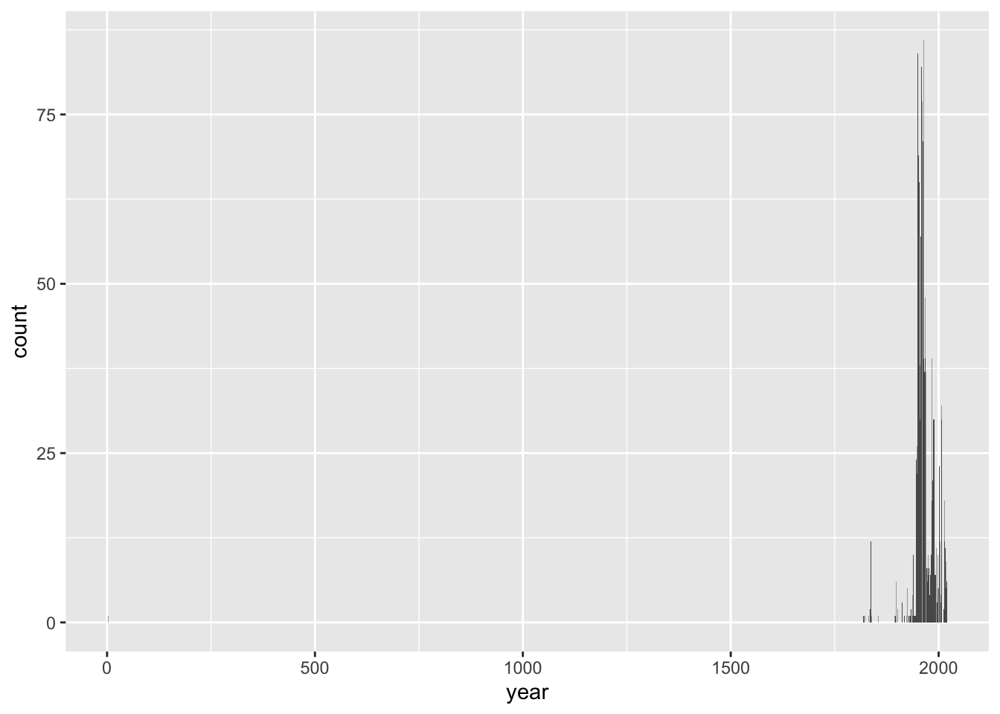
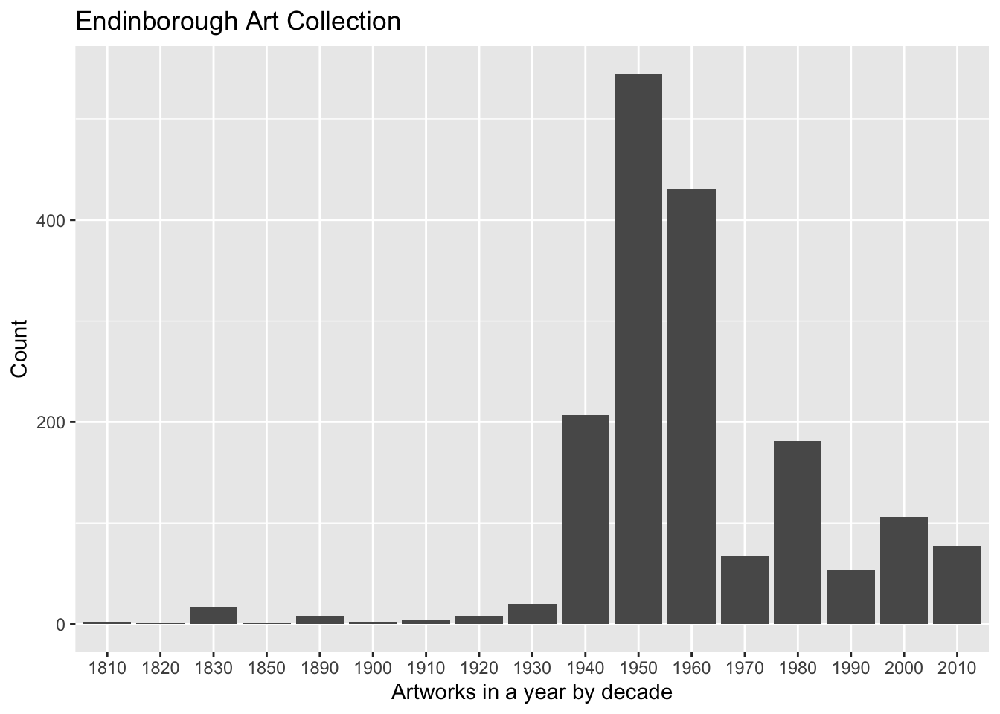

link to assignment: https://datascience4psych.github.io/DataScience4Psych/lab08.html
link to archived assignment: https://web.archive.org/web/20250414135303/https://datascience4psych.github.io/DataScience4Psych/lab08.html#write-out-data
First, let’s load the necessary packages:
library(tidyverse)
library(dplyr)
library(skimr)
library(robotstxt) #use to see if can use paths_allowed## Warning: package 'robotstxt' was built under R version 4.3.3library(rvest)
library(magrittr)## Warning: package 'magrittr' was built under R version 4.3.3library(skimr)
paths_allowed("https://collections.ed.ac.uk/art)")## [1] TRUENow, load the dataset. If your data isn’t ready yet, you can leave
eval = FALSE for now and update it when needed.
uoe_art <- read_csv("./data/uoe-art.csv")
view(uoe_art)Let’s start working with the title column by separating the title and the date:
uoe_art <- uoe_art %>%
separate(title, into = c("title", "date"), sep = "\\(") %>%
mutate(year = str_remove(date, "\\)") %>% as.numeric()) %>%
dplyr::select(title, artist, year, link)## Warning: Expected 2 pieces. Additional pieces discarded in 47 rows
## [182, 195, 209, 533, 729, 732, 771, 775, 781, 879, 982,
## 1029, 1041, 1045, 1132, 1176, 1279, 1336, 1358, 1359,
## ...].## Warning: Expected 2 pieces. Missing pieces filled with `NA` in 697
## rows [4, 15, 17, 22, 26, 27, 30, 31, 32, 34, 39, 41, 44,
## 53, 58, 63, 78, 82, 86, 93, ...].## Warning: There was 1 warning in `mutate()`.
## ℹ In argument: `year = str_remove(date, "\\)") %>%
## as.numeric()`.
## Caused by warning in `str_remove(date, "\\)") %>% as.numeric()`:
## ! NAs introduced by coercion#Note select() is being overrode by other packages, such as MASS.The code was already provided, so I didn’t change anything. I’m guessing the error related to “expected two pieces” is because not all pieces had both a year and an author. I can see no author in some rows (182, 533, etc.) but not in all of them. I’m also guessing that they filled in these missing pieces with “NA.” There were probably rows that didn’t have parentheses around years, adding to the confusion. One of the rows just gave us a “2” for the year, probably adding to the confusion about including the year.
skim(uoe_art)| Name | uoe_art |
| Number of rows | 3312 |
| Number of columns | 4 |
| _______________________ | |
| Column type frequency: | |
| character | 3 |
| numeric | 1 |
| ________________________ | |
| Group variables | None |
Variable type: character
| skim_variable | n_missing | complete_rate | min | max | empty | n_unique | whitespace |
|---|---|---|---|---|---|---|---|
| title | 0 | 1.00 | 0 | 95 | 5 | 1629 | 0 |
| artist | 111 | 0.97 | 2 | 55 | 0 | 1198 | 0 |
| link | 0 | 1.00 | 45 | 48 | 0 | 3312 | 0 |
Variable type: numeric
| skim_variable | n_missing | complete_rate | mean | sd | p0 | p25 | p50 | p75 | p100 | hist |
|---|---|---|---|---|---|---|---|---|---|---|
| year | 1580 | 0.52 | 1964.56 | 53.22 | 2 | 1953 | 1962 | 1977 | 2020 | ▁▁▁▁▇ |
uoe_art %>%
ggplot(aes(
x = year
))+
geom_bar()## Warning: Removed 1580 rows containing non-finite outside the scale
## range (`stat_count()`).
summary(uoe_art)## title artist year link
## Length:3312 Length:3312 Min. : 2 Length:3312
## Class :character Class :character 1st Qu.:1953 Class :character
## Mode :character Mode :character Median :1962 Mode :character
## Mean :1965
## 3rd Qu.:1977
## Max. :2020
## NA's :1580Using skim(), it appears that there are 111 artists missing from the data frame. It also appears there are 1580 data missing from the year column. One of the paintings shows a painting to be from the year 2. Death mask had an additional number in the sequence. The year should be 1964.
#Change year for Death Mask
uoe_art_fixed <- uoe_art %>%
mutate(year = case_when(
year == "2" ~ "1964",
.default = as.character(year)
))
view(uoe_art_fixed)
uoe_art_fixed <- uoe_art_fixed %>%
mutate(decade = cut(as.numeric(year),
breaks = seq(1810, 2030, by = 10),
labels = seq(1810, 2020, by = 10),
right = TRUE))
ggplot(data=subset(
uoe_art_fixed,
!is.na(decade)),
aes(x=decade))+
geom_bar()+
labs(
x = "Artworks in a year by decade",
y = "Count",
title = "Endinborough Art Collection"
)
Here I used a subset of the data that got rid of the missing years and binned years to create decades. We can see there are a lot of artwork created in the mid 1900s.
uoe_art_fixed %>%
count(artist, sort = TRUE)## # A tibble: 1,199 × 2
## artist n
## <chr> <int>
## 1 Unknown 373
## 2 Emma Gillies 175
## 3 <NA> 111
## 4 Ann F Ward 23
## 5 John Bellany 22
## 6 Zygmunt Bukowski 21
## 7 Boris Bućan 17
## 8 Marjorie Wallace 17
## 9 Gordon Bryce 16
## 10 William Gillon 16
## # ℹ 1,189 more rowsThe most common artist is unknown! This is followed by Emma Gillies and N/A. Apparently this database doesn’t know a lot about their artworks.
filter(uoe_art_fixed, str_detect(uoe_art_fixed$title, "Child") == TRUE)## # A tibble: 11 × 5
## title artist year link decade
## <chr> <chr> <chr> <chr> <fct>
## 1 "The Sun Dissolves while Man Looks Away from the U… Eduar… <NA> coll… <NA>
## 2 "Virgin and Child" Unkno… <NA> coll… <NA>
## 3 "Virgin and Child " Unkno… <NA> coll… <NA>
## 4 "Woman with Child and Still Life " Cathe… 1938 coll… 1930
## 5 "Virgin and Child " Unkno… <NA> coll… <NA>
## 6 "Child's collar. Chinese" Unkno… <NA> coll… <NA>
## 7 "Child's chinese headdress" Unkno… <NA> coll… <NA>
## 8 "Figure Composition with Nurse and Child, and Woma… Edwar… <NA> coll… <NA>
## 9 "Untitled - Children Playing " Monik… 1963 coll… 1960
## 10 "The Children's Hour " Eduar… <NA> coll… <NA>
## 11 "Untitled - Portrait of a Woman and Child " Willi… <NA> coll… <NA>I found all cases where the title contained child and filtered for them. There are 11 total titles containing child/children.